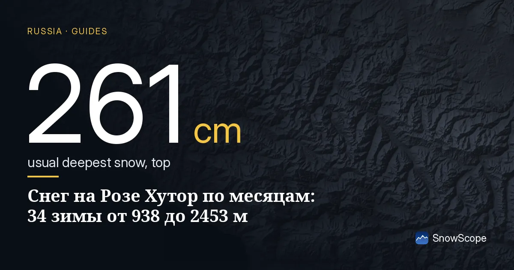

Снег на Розе Хутор по месяцам: 34 зимы от 938 до 2453 м
Роза Хутор над Красной Поляной под Сочи — самый большой горнолыжный район России по карте трасс: 90 км трасс и 26 подъёмников, от 938 до 2453 м. Это гора с двумя климатами: мягкая зелёная долина и высокий снежный хребет. Наша история снега за 34 прошлые зимы (1991-92 – 2024-25) показывает, насколько велика эта разница и когда белой бывает вся гора.
Смотрите прогноз снега для Роза Хутор в приложении SnowScopeВысота снега, оповещения и 3D-карта, бесплатно.

1515 метров разницы
Внизу (938 м) обычный пик зимы — 78 см: от 55 см в самую бедную зиму до 107 см в самую богатую. В середине склона (1695 м) — 187 см, а наверху (2453 м) — 261 см, в диапазоне от 182 до 356 см.
Длина сезона растёт так же: снег лежит около 161 дня в году внизу, 176 дней в середине и 180 дней наверху. В один и тот же день на хребте может быть глубокая зима, а у реки — тонкий весенний снег.
Декабрь — это лотерея
Первый снег обычно приходит наверх около 1 ноября, в середину склона — около 7 ноября, а вниз — только около 19 ноября. Но первый снег — это ещё не сезон.
В декабре обычная высота снега наверху — 59 см, и разброс огромный: 11 см или меньше в один декабрь из десяти и 150 см или больше в другой. В середине склона обычно 42 см (от 8 до 108 см), внизу — 18 см. Новогодняя поездка может оказаться отличной или очень бедной на снег, и за месяц это не предсказать.
С января по март: надёжные месяцы
Январь меняет картину. Обычная высота наверху растёт до 139 см, затем 202 см в феврале и 205 см в марте. В середине склона — 99 см в январе, 144 см в феврале и 147 см в марте. Даже внизу в феврале обычно 61 см, а в марте 62 см.
Лучшая неделя года — 8-я, конец февраля: во все 34 зимы наверху было не меньше 50 см, обычно 217 см. Если считать недели, когда 50 см бывает в 9 зимах из 10, наверху их 14, в середине — 11. Внизу таких недель нет, поэтому нижние трассы сильнее зависят от того, какая выдалась зима.
Весеннее катание
Апрель наверху всё ещё хороший месяц: обычно 131 см наверху и 94 см в середине, но всего 39 см внизу, и этот снег быстро тает. Снег обычно держится примерно до 14 мая наверху и до 8 мая внизу.
Весной катайтесь утром в верхней половине, пока снег плотный, а если нижние трассы мокрые, спускайтесь на подъёмнике.
Явная тенденция к уменьшению
Мы сравнили первые 15 зим ряда с последними 15. Обычный пик наверху снизился с 289 до 246 см, в середине — с 207 до 176 см, внизу — с 87 до 74 см. Сезон тоже стал короче: со 189 до 173 снежных дней наверху, со 187 до 165 в середине и со 175 до 153 внизу.
Последняя зима ряда, 2024-25, дала наверху пик 262 см — близко к многолетней норме. На высоте Роза Хутор остаётся одним из самых снежных больших районов Европы; потери — в длине сезона и в нижней части горы.
Как спланировать поездку
Лучшие шансы — с конца января до середины марта в верхней половине горы. В декабре выбор трасс зависит от первых больших снегопадов, поэтому по возможности оставляйте даты гибкими. Соседние районы Газпром и Красная Поляна находятся в той же долине; их история в эту статью не входит.
Советы лыжникам
- Выбирайте февраль или начало марта: это самый глубокий и надёжный снег на всей горе.
- В декабре и апреле катайтесь в верхней половине: наверху снега обычно намного больше, чем внизу.
- Оставляйте новогодние даты гибкими: снег в декабре сильно меняется от зимы к зиме.
- Посмотрите карту снега за несколько дней до поездки: в начале сезона высота снега быстро меняется.
- Вне трасс сначала проверьте официальную лавинную информацию и никогда не катайтесь в одиночку.
About these numbers
Данные о снеге: история снега SnowScope, 34 прошлые зимы (1991-92 – 2024-25) на трёх высотах курорта (оценка для района, а не сводки курорта). Подъёмники и трассы: карта трасс.
Official avalanche bulletins: EAWS – European Avalanche Warning Services
Cite this report
For research, teaching or the press: the numbers and charts are free to reuse under CC BY 4.0 with this citation.
SnowScope (2026), Снег на Розе Хутор по месяцам: 34 зимы от 938 до 2453 м, https://snowscope.app/blog/ru/2026/11/rosa-khutor-snow-by-month-krasnaya-polyana-34-winters.html, accessed 2026-11-24
SnowScope (Atlas Labs). (2026, November 24). Снег на Розе Хутор по месяцам: 34 зимы от 938 до 2453 м. SnowScope snow reports. https://snowscope.app/blog/ru/2026/11/rosa-khutor-snow-by-month-krasnaya-polyana-34-winters.html
BibTeX
@misc{snowscope2026rosakhutorsnowbymonthkra,
author = {{SnowScope (Atlas Labs)}},
title = {Снег на Розе Хутор по месяцам: 34 зимы от 938 до 2453 м},
year = {2026},
month = nov,
howpublished = {\url{https://snowscope.app/blog/ru/2026/11/rosa-khutor-snow-by-month-krasnaya-polyana-34-winters.html}},
note = {Published 2026-11-24 10:03 UTC; accessed 2026-11-24}
}· CC BY 4.0 · Methods, data and tools →
Роза Хутор: snow and temperature by height, this winter vs last (tools) →
Follow Роза Хутор
Бесплатно: сообщение, когда идёт новый снег, и прогноз каждое утро.